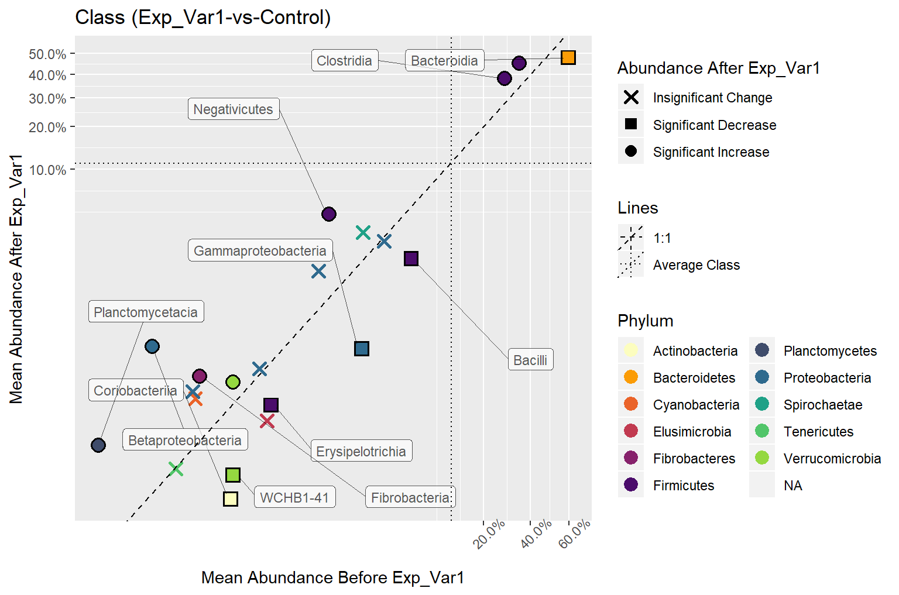

Data Wrangling
# Get the data files from package
input_files <- pkg.data$input_files
biom_file <- input_files$biom_files$silva # Path to silva biom file
tree_file <- input_files$tree_files$silva # Path to silva tree file
metadata_file <- input_files$metadata # Path to Nephele metadata
parse_func <- parse_taxonomy_silva_128 # A custom phyloseq parsing function for silva annotations
# Get the phyloseq object
phy_obj <- create_phyloseq(biom_file = biom_file,
tree_file = tree_file,
metadata_file = metadata_file,
parse_func = parse_func)
# Get the taxmap object in the raw format
raw_metacoder <- as_MicrobiomeR_format(obj = phy_obj, format = "raw_format")Filtering
# Remove Archaea from the metacoder object
metacoder_obj <- taxa::filter_taxa(obj = raw_metacoder,
taxon_names == "Archaea",
subtaxa = TRUE,
invert = TRUE)
# Ambiguous Annotation Filter - Remove taxonomies with ambiguous names
metacoder_obj <- metacoder::filter_ambiguous_taxa(metacoder_obj,
subtaxa = TRUE)
# Low Sample Filter - Remove the low samples
# The sample filter should generally be implemented first
metacoder_obj <- sample_id_filter(obj = metacoder_obj,
.f_filter = ~sum(.),
.f_condition = ~.>= 20,
validated = TRUE)
# Master Threshold Filter - Add the otu_proportions table and then filter OTUs based on min %
metacoder_obj <- otu_proportion_filter(obj = metacoder_obj,
otu_percentage = 0.00001)
# Taxon Prevalence Filter - Add taxa_abundance and taxa_proportions and then filter OTUs that do not
# appear more than a certian amount of times in a certain percentage of samples at the specified
# agglomerated rank. This is considered a supervised method, because it relies on intermediate
# taxonomies to filter the data.
# The default minimum abundance is 5 and the sample percentage is 0.5 (5%).
# Phylum
metacoder_obj <- taxa_prevalence_filter(obj = metacoder_obj,
rank = "Phylum")
# Class
metacoder_obj <- taxa_prevalence_filter(obj = metacoder_obj,
rank = "Class",
validated = TRUE)
# Order
metacoder_obj <- taxa_prevalence_filter(obj = metacoder_obj,
rank = "Order",
validated = TRUE)
# OTU Prevalence Filter - Filter OTUs that do not appear more than a certian amount of times in a
# certain percentage of samples. This is considered an unsupervised method, because it relies only
# on the leaf OTU ids to filter the data.
metacoder_obj <- otu_prevalence_filter(obj = metacoder_obj,
validated = TRUE)
# Coefficient of Variation Filter - Filter OTUs based on the coefficient of variation
metacoder_obj <- cov_filter(obj = metacoder_obj,
coefficient_of_variation = 3,
validated = TRUE)Analysis
Analysis is primarily done with metacoder, MicrobiomeR, and ggplot2. Before beginning the analysis it’s wise to create an output directory. Use end_path=FALSE with MicrobiomeR’s get_output_dir() function to avoid the creation of a date formatted directory.
# Create a directory for whichever plot you want to save
heat_tree_path <- get_output_dir(end_path = FALSE, start_path = "output", plot_type = "heat_tree")
corr_plot_path <- get_output_dir(end_path = FALSE, start_path = "output", plot_type = "correlation")Statistics
Statistical analysis is primarily done with the help of metacoder style functions such as the calc_*() group of functions, and compare_groups(). The taxa function taxonomy_table() is also useful for matching stats with the proper taxonomic annotation. MicrobiomeR creates the proper tables with as_MicrobiomeR_format(format = "analyzed_format", ...).
Visualization
Visualization of taxmap objects can be done in several ways. The metacoder package primarily produces heat_tree()s for visualization, which can be used for any taxmap object. MicrobiomeR does this as well, but takes care of creating default values that we enjoyed in our heat tree plots.
MicrobiomeR also uses ggplot2 to create correlation_plot()s.
# Generate heat_trees
heat_tree_plots <- get_heat_tree_plots(metacoder_obj,
rank_list = c("Phylum", "Class", "Order"),
node_label = ifelse(wilcox_p_value > 0.05, taxon_ids, NA),
node_label_size = 2,
node_label_color = c("darkgreen"))
names(heat_tree_plots)
#> [1] "metacoder_object" "heat_trees" "taxmaps"
# Generate correlation_plots
corr_plots <- get_correlation_plots(metacoder_obj, primary_ranks = c("Phylum", "Class", "Order"))
names(corr_plots)
#> [1] "Phylum" "Class" "Order"# Save plots with a custom output path
save_heat_tree_plots(htrees = heat_tree_plots, custom_path = heat_tree_path)
save_correlation_plots(corr = corr_plots, custom_path = corr_plot_path)


